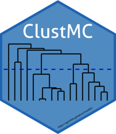

Package index
-
bss_test() - Bautista, Smith and Steiner test for multiple comparisons
-
dgc_test() - Di Rienzo, Guzman and Casanoves test for multiple comparisons
-
jolliffe_test() - Jolliffe test for multiple comparisons